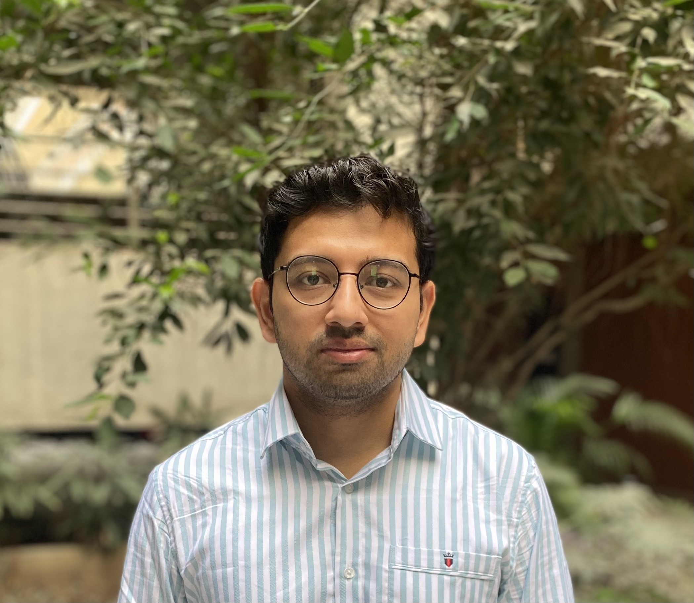

Principal Investigator
Soumajit Dutta
Assistant Professor · Department of Chemical Engineering
Indian Institute of Technology Gandhinagar
Soumajit Dutta is an Assistant Professor in the Department of Chemical Engineering at the Indian Institute of Technology Gandhinagar. His research combines machine learning and molecular simulation to understand and design molecular systems.
Before joining IIT Gandhinagar, he was a postdoctoral researcher at the University of Chicago with Prof. Andrew Ferguson, where he studied how defects influence energy and quantum applications using machine-learning interatomic potentials. He earned his PhD in Chemical and Biomolecular Engineering from the University of Illinois Urbana-Champaign, working with Prof. Diwakar Shukla to combine molecular simulation and statistical methods to understand protein–drug interactions.